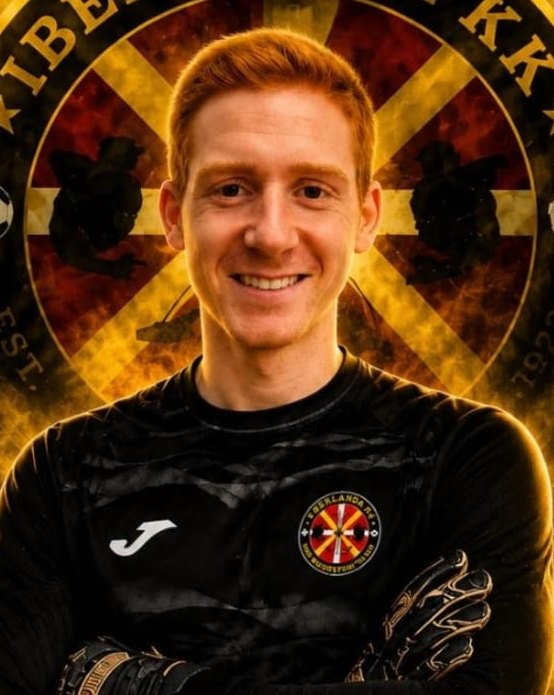

De Ibiza y con Casillas en la cabeza
Con 4 o 5 años veía los partidos del Real Madrid con mi padre y solo me fijaba en una persona: Iker Casillas. Era mi ídolo. A los 6 empecé en el club de mi barrio, en Ibiza, y ahí me enamoré de jugar de portero.
Quién soy
Me llamo Joan Costa, soy de Ibiza y juego de portero desde 2008. Ahora defiendo la portería del Iberlanda, en 2.ª División Regional de Bizkaia. No soy entrenador titulado: soy un portero que te cuenta lo que ha vivido bajo palos, por si a ti te sirve.

Con 4 o 5 años veía los partidos del Real Madrid con mi padre y solo me fijaba en una persona: Iker Casillas. Era mi ídolo. A los 6 empecé en el club de mi barrio, en Ibiza, y ahí me enamoré de jugar de portero.
Me fui de Ibiza a estudiar al País Vasco. Tuve que buscar equipo y conocer gente por mi cuenta, y gestionar solo todo lo que siente un portero en los partidos y en los entrenamientos. Eso me hizo más fuerte y me enseñó a ver las cosas desde otra perspectiva.
Con los años he visto cómo he progresado, sobre todo en lo mental. Por eso sentí la necesidad de contar mis vivencias y lo que pensamos los porteros. Mi objetivo es ayudarte a progresar de la misma forma.
Ilusión por lo que haces y un aprendizaje cercano. He vivido miles de situaciones iguales a las que vives tú en cada partido, y te las cuento de portero a portero.
Esta es mi trayectoria desde juveniles: